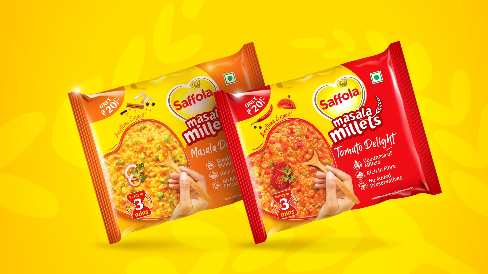
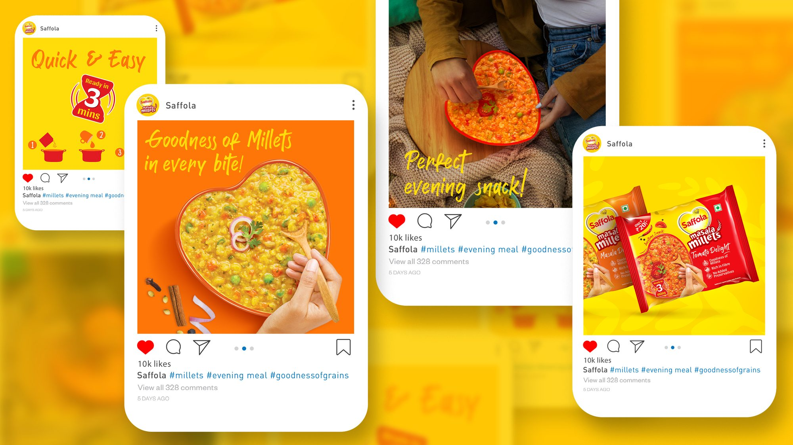
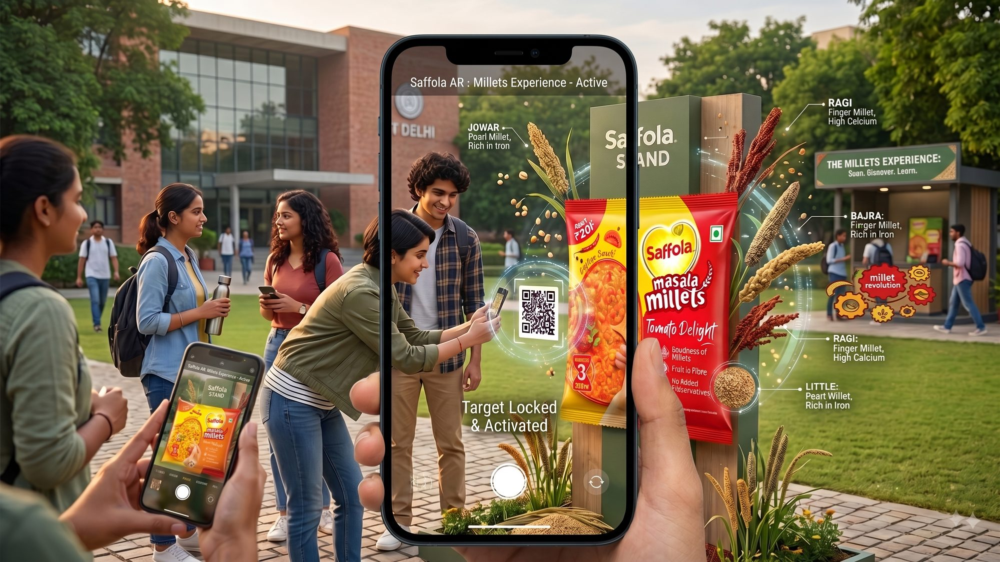
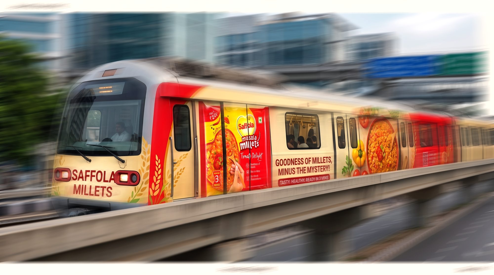

Saffola Millets Masala
Branding, packaging and photography direction for Saffola's push into millet snacking.
Elephant Design, Pune
Task at hand
Saffola's known for health — it's been India's #1 oats brand for years. When they decided to get into millets too, the job was to take a grain most people think of as bland diet food or something their grandmother cooked, and turn it into a 3-minute snack families would actually reach for.
Challenge
Outside South India, most people don't really know what to do with millets — they assume it takes forever to cook, tastes bland, or both. The pack had to make you hungry just looking at it, sell "quick" as hard as it sold "healthy," and still feel unmistakably like Saffola.


Packaging brought to life across digital touchpoints — animated.



Campus AR activation and metro OOH extension.